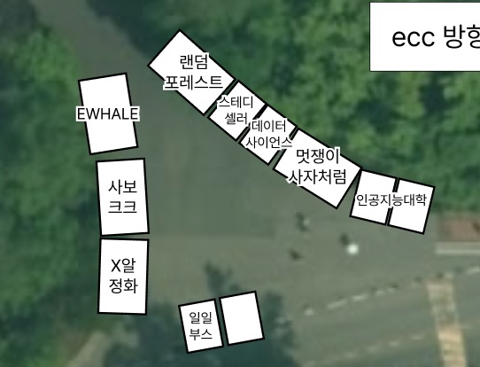

MY GUARDIAN / OUR POSSIBILITY
내 안의 가능성, 캐릭터 체인지!
만들고, 지키고, 배우고, 나의 길을 찾는 마음.
학과별 수호알을 눌러 우리의 수호캐릭터를 만나보세요.
01 / BOOTH LINEUP
어느 부스부터 가볼까?
맛있는 먹거리부터 소장하고 싶은 굿즈까지, 취향대로 골라봐요.
총 9개의 부스
하트를 눌러 가고 싶은 부스를 모아보세요.아직 만날 부스가 없어요
다른 검색어나 필터로 찾아볼까요?
5번 부스는 수요일 ‘동물농장’, 목요일 ‘우리동아리 정상영업합니다’로 운영돼요.
02 / FESTIVAL PLAYLIST
우리의 마음을, Unlock!
사진도 남기고, 수호알도 만나고. 인지상정의 여섯 가지 즐거움.
카드를 눌러 참여 방법을 확인해 주세요. 운영시간과 비용은 현장에서 안내해요.
03 / FIND YOUR BOOTH
우리 부스, 여기 있어!
학생문화관 야외부스 배치도 · 오른쪽 위가 ECC 방향이에요.

04 / GOOD TO KNOW
만나기 전에
확인해 주세요.
즐거운 축제를 위한 작은 안내
축제는 언제, 어디서 열리나요?
2026년 11월 4일(수)부터 5일(목)까지, ECC 인지대 라운지 및 학생문화관 야외부스에서 만나요. 야외부스 위치는 부스 배치도에서 확인해 주세요. 자세한 운영시간은 추후 안내할 예정이에요.
요일마다 만날 수 있는 부스가 다른가요?
대부분의 참여 부스는 양일 운영해요. 5번 부스는 수요일에 ‘동물농장’, 목요일에 ‘우리동아리 정상영업합니다’가 운영되니 요일 필터로 확인해 주세요. 축제 프로그램의 운영일은 추후 안내할 예정이에요.
메뉴와 가격은 어디서 확인하나요?
부스 카드를 누르면 판매 품목과 소개를 볼 수 있어요. 아직 확정되지 않은 품목은 ‘미정’ 또는 ‘논의 중’으로 표시했어요. 가격과 결제 방법은 현재 안내 전이에요.
도장판 이벤트는 어떻게 참여하나요?
도장판 이벤트가 준비되어 있어요. 참여 방법, 도장 획득 조건, 선물 등 자세한 내용은 추후 안내할 예정이에요.
찜한 부스는 어디에 저장되나요?
하트를 누른 부스는 현재 기기의 브라우저에 저장돼요. 상단의 ‘찜한 부스’에서 모아볼 수 있어요. 브라우저 데이터를 삭제하거나 다른 기기를 사용하면 목록이 이어지지 않을 수 있어요.
SAVE THE DATE
우리, 여기서 만나!
2026. 11. 04 — 11. 05
ECC 인지대 라운지 및
학생문화관 야외부스
제2회 인공지능대학 축제 · 인지상정
주관: 제5대 인공지능대학 학생회 AIR

우리의 마음이 만나는 곳, 인지상정
↑